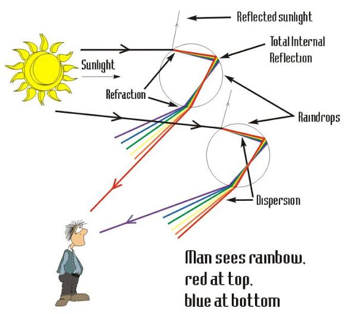

How is rainbow formed?
Science · 5 min read

A rainbow forms when sunlight passes through tiny drops of water in the air, usually after rain. When sunlight enters a water droplet, it bends. This bending of light is called REFRACTION.Sunlight may look white but it is actually made up of seven different colors.
Inside the water droplet, the light reflects off the inner surface and bends again as it comes out. During this process white light seprates into seven different colors: red, orange, yellow, green, blue, indigo and voilet. The Sepration of white light into seven different color is know as DISPERSION.
We see a rainbow when sunlight come from behind us and raindrop are in front of us, with the sun relatively low in the sky. Millions of tinly droplet work together to create the colorful arc we see. Each color bends at slightly different angle, which is why the colors appear in particular order with red on the outside and voilet on the inside